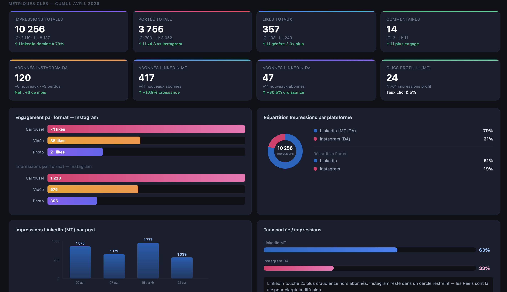
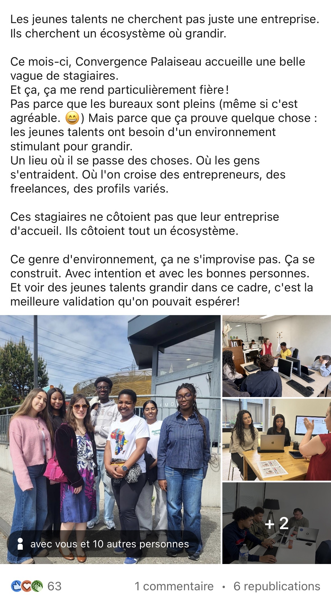
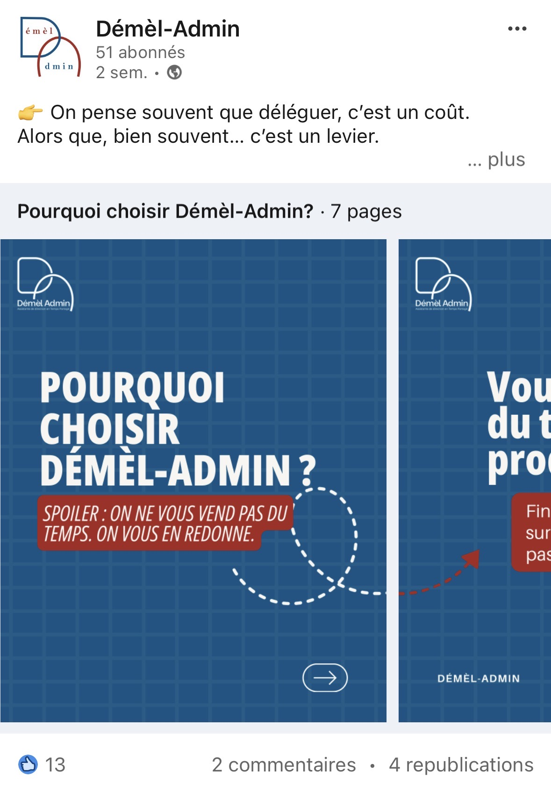
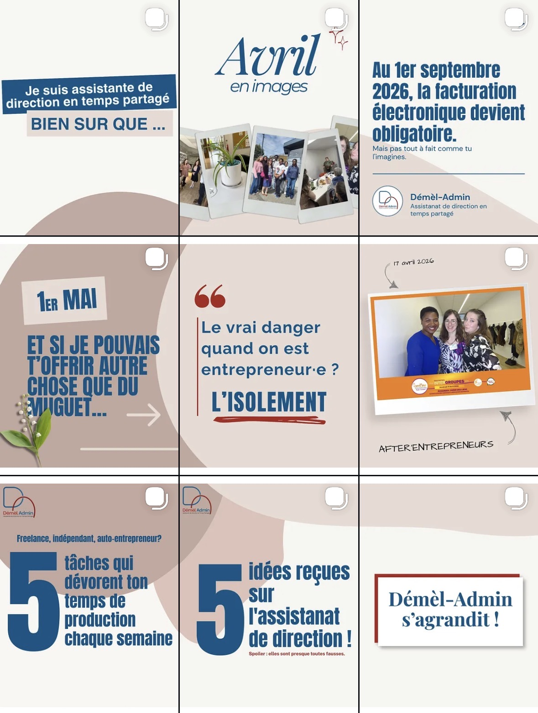

Aspiring Digital Marketer, en Master Digital Marketing & Data Analytics
Je suis |
À la recherche d'une alternance de 2 ans à partir de septembre 2026

Futur étudiante en Master Digital Marketing et Data Analytics, je me positionne à l'intersection du marketing de contenu et de la data. Après 4 expériences en agence, média, e-commerce et auprès d'entrepreneurs en marketing B2B, j'ai développé une approche orientée performance : je ne crée pas du contenu pour simplement le publier ; je l'analyse, je l'optimise et je le pilote par les KPI.
Ce portfolio reflète cette évolution : des stratégies éditoriales construites et une vision qui va au-delà de l'esthétique pour viser la conversion.
Découvrez les projets concrets réalisés lors de mes stages en agence, média et entreprise.
ExplorerUne sélection de projets réalisés dans le cadre de ma formation en BUT Information-Communication.
ExplorerDémèl-Admin
Marana TV
Communik
FM Cosmetics
Dare.WIN
EMLV et IIM
Web analytics, SEO/SEA, Marketing automation, Data visualisation, SQL, Python, Machine learning appliqué au marketing, Gestion de campagnes digitales. Certifications : Google Analytics, Google Ads, Meta Business, HubSpot. Alternance : 3 semaines entreprise / 1 semaine cours.
IUT de Montreuil, Université Paris 8
Cette formation m'a apporté une maîtrise des fondamentaux de la communication stratégique, du branding et de la création de contenus, ainsi que la capacité à concevoir et piloter des dispositifs de communication cohérents.
IUT de Ville d'Avray, Université Paris 10
Cette formation m'a permis d'acquérir une compréhension des enjeux commerciaux et marketing, d'analyser les marchés et les cibles, et d'intégrer une logique orientée performance dans les projets.
Lycée Elisa Lemonnier, Paris 12
Les outils que je maîtrise pour créer, organiser et analyser


Découvrez les retours des entreprises avec lesquelles j'ai eu le plaisir de collaborer

« Nous tenons à souligner que Fanta a été une stagiaire particulièrement impliquée et motivée tout au long de son stage. Elle a su rapidement s'adapter à notre environnement de travail et faire preuve d'une grande autonomie dans les missions qui ont été confiées. Nous la remercions pour son engagement et son professionnalisme et nous ne pouvons que lui souhaiter une pleine réussite pour la suite de son parcours. »

« Fanta est une étudiante ponctuelle et gentille avec une belle capacité d'adaptation. Elle a su nous faire des propositions de communication ainsi que des propositions d'amélioration. Elle avait soif d'apprendre et était à l'écoute. Continue comme ça. »

« Fanta a été super impliquée et toujours partante. Elle a participé à la création de contenus pour nos réseaux, proposé des idées, aidé à améliorer notre communication et s'est vite intégrée à l'équipe. Curieuse, à l'écoute et sérieuse, elle avait vraiment envie d'apprendre. Son investissement a clairement fait la différence. On lui souhaite que du bon pour la suite!! »
Vous avez une opportunité à me proposer ? N'hésitez pas à me contacter!
Découvrez ce qui m'inspire et nourrit ma créativité au quotidien
En dehors de la communication, je suis une passionnée qui aime comprendre, observer et ressentir. Voyager et découvrir d'autres cultures nourrit ma vision et mon ouverture d'esprit. Je m'intéresse autant à l'histoire et aux faits divers qu'aux coulisses de l'industrie du divertissement.
La cosmétique fait partie intégrante de mon univers : un terrain d'expression, de créativité et d'identité. La musique (plutôt urbaine), elle, est omniprésente, elle accompagne mes journées et façonne mon énergie créative. Curieuse et en mouvement, je transforme ce qui m'inspire en idées, et les idées en projets !
Sénégal • Albanie • Grèce • Espagne • Portugal • Annecy
Mon énergie créative au quotidien

Expression, créativité et identité

Les coulisses et les faits historiques

Mai - Juin 2025 • Stagiaire Community Manager
Communik est une agence de communication digitale spécialisée dans la création de contenus pour les réseaux sociaux. L'agence accompagne ses clients dans leur stratégie digitale et la production de contenus engageants.
Mon stage chez Communik m'a permis de développer mes compétences en community management et en création de contenus, tout en découvrant les coulisses de la production audiovisuelle pour les réseaux sociaux.


Depuis Décembre 2023 • Community Manager
Marana TV est une chaîne YouTube consacrée à la mode, la santé et le bien-être. En tant que Community Manager, j'accompagne le développement de la communauté et l'animation des réseaux sociaux de la chaîne.
Mon rôle consiste à créer une stratégie de contenu cohérente, à analyser les performances et à développer l'engagement de la communauté à travers différentes plateformes sociales.
À partir de mars 2026 • Stagiaire Chargée de Marketing Digital
Mélanie Traulle est solopreneur spécialisée dans l'assistanat de direction en temps partagé. Elle accompagne des entrepreneurs dans leur quotidien professionnel pour leur permettre de se recentrer sur ce qui compte vraiment : leur activité.
Au-delà de son activité principale, Mélanie est co-fondatrice de Convergence, un espace de coworking à Palaiseau (91) qu'elle a créé pour offrir aux solopreneurs un cadre de travail convivial et bienveillant. Elle co-anime également La Parenthèse, une communauté d'entrepreneurs qui se réunit régulièrement pour s'entraider, partager leurs défis du moment et avancer ensemble, sans pression commerciale.




Mai - Juin 2024 • Stagiaire Chargée de communication externe
FM Cosmetics est une entreprise spécialisée dans les produits cosmétiques et de beauté. Mon stage m'a permis de travailler sur la stratégie de communication digitale de l'entreprise et de créer des contenus variés pour développer sa présence en ligne.
J'ai pu mettre en pratique mes compétences en création de contenu, stratégie digitale et optimisation SEO tout en contribuant au développement de la marque sur les réseaux sociaux.

Tout au long de mes formations, j'ai eu l'opportunité de travailler sur de nombreux projets variés, tant individuels qu'en équipe. Ces expériences concrètes m'ont permis de développer des compétences pratiques et de me familiariser avec les différents aspects de la communication.

Mon équipe et moi avons remporté le Challenge de la Communication Locale, développant une stratégie innovante pour Verifone.
Découvrir le projet
Projet de branding fictif pour Kreden, une marque de sneakers haut de gamme. Recommandation stratégique complète.
Découvrir le projet
Création d'un magazine digital collectif. Conception du logo et rédaction d'un article sur Monsieur Nov.
Découvrir le projet
Campagne audiovisuelle pour Santé Publique France sur l'addiction aux jeux vidéo.
Découvrir le projet
Stratégie de communication et dimension événementielle pour une campagne politique fictive.
Découvrir le projet
Publicité vidéo fictive pour le parfum Mon Paris d'Yves Saint Laurent. Scénario et direction artistique.
Découvrir le projet